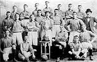
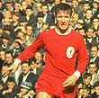
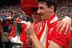
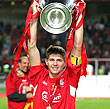

If it wasn't for one man, Liverpool Football Club would never have been born. When Everton left Anfield in a dispute over rent in 1892, club chairman John Houlding stayed behind along with a handful of supporters and just three first-team players. But he was determined to see football continue at the ground. He formed a new club from scratch, chose the name Liverpool… and created a legend.
Even John Houlding couldn't have predicted how successful it would become. More than 100 years on, no English club can match the LiverpoolFC roll of honour; League Champions 18 times, FA Cup winners seven times, League Cup winners seven times, European Cup winners five times and UEFA Cup winners three times.
When it is completed, the History channel will chart the rise and rise of Liverpool FC to the very summit of the England game, from the struggles of the early years right up to Gerard Houllier's historic treble in 2001. This channel will recall glorious domestic victories and European triumphs and reflect on the tragedies of Heysel and Hillsborough.
We've focused on 10 key dates in Liverpool Football Club's history to begin with but over time, we'll have over 100 chapters in this section alone as we present the ultimate history of England's greatest ever football club. This is a story of incredible passion and pride - a story that not only inspires Liverpool fans but football supporters the world over.
1892 – Liverpool Football Club formed
1901 - Our first title win
1950 - First Wembley appearance
1959 - Shankly appointed manager
1965 - Winning the FA Cup for first time
1977 - European Champions
1985 - Heysel Disaster
1986 - Doing the Double
1989 – Hillsborough
2001 - Clinching the cup treble
2005 - Champions League Winners 2005
2006 - FA CUP WINNERS 2006
1892 – Liverpool Football Club formed
When the Football League was founded in 1888, Anfield was one of League's original grounds. On September 8th 1888 the very first Saturday of League football, Anfield welcomed as visitors Accrington to play not against the 'Reds', but the 'Blues' of Everton Football Club.
The blue and white quartered shirts of Everton FC made quite a name for themselves at Anfield winning the League Championship in 1891, but this is to run ahead slightly. Both teams owe their existence to a Reverend Chambers of the then newly constructed and now, totally demolished, church - St Domingo, and to John Houlding - Tory MP and Mayor of Liverpool who ultimately caused Everton FC to leave Anfield and who created Liverpool Football Club.
St Domingo's football team was a strictly amateur affair created amid the belief that young lads could better be kept on the path of religious well-being through a healthy passion for competitive team games. After only a year or so of enthusiastic play in Stanley Park, they renamed themselves Everton Football Club in honour of the location of their founding church.
The St Domingo's team met however not at Church, but the Queen's Head Hotel in Village Street adjacent to "Ye Anciente Everton Toffee House". From this Everton F.C. gained their curious nickname of "The Toffees". In adopting the name Everton, the team ensured that they would permanently struggle to be located with confidence by those from outside of the city and lead to Royalty asking "Tell me, from which part of the country is the city of Everton?" nearly a century later.
The fledgling Everton played in a number of locations but settled in a greenfield site between Anfield Road and Walton Breck Road. So was born one of the great names in world football - Anfield. The team prospered and became financially sound with astute guidance from their President Mr John Houlding. John Houlding was a brewer, local council member and later Mayor of Liverpool.
Despite this he has become a largely forgotten figure in the city, although a bronze plaque outside the Directors' Lounge in Anfield and a fine oil portrait hanging within the Club museum preserve his likeness.
For a man responsible for the development of Everton and the creation of Liverpool Football Club, it is amazing how little he is remembered. There are however a few landmarks in the area where Houlding was known as "King John of Everton". The very short 'Houlding Street' has on it's corner the 'Sandon' pub. This pub was once owned by Houlding and he led many meetings of Everton Football Club from here in the bowls pavilion that existed to the rear. The place was also used as a dressing room by the players for many years. Both Everton and later Liverpool football teams were first photographed in front of this bowls pavilion.
It can be questioned whether Everton would have been one of the founding members of the Football League in 1888 without Houlding's assistance. He brought Everton to Anfield in 1884. They previously rented a little field in Priory Road, north of Stanley Park, but they were unwelcome because of the noisy crowds on match days.
So Houlding went to his friend and fellow brewer, Mr. Orrell, who owned a place in Anfield Road and conducted the business to get a new home ground. But it was from this point on that criticism of the club President started to grow from some members of the Everton board, building up to a crisis in 1892.
It was not the rent alone that annoyed the board members. Houlding also wanted only his sparkling ales to be sold at the ground, and he of course profited very considerably from this arrangement. However it was still John Houlding that helped the club out when they need money to buy players and rebuild the ground.
The Sandon's use as dressing room was an arrangement that really only suited Houlding as he again benefited from his players drinking his products. A letter in the Liverpool Echo in January 1892 suggested that Houlding didn't want the club to move out of the pub.
The writer says: "It's a disgrace that at a big club such as Everton, players have to walk through hordes of people on match days."
The conflict on how the club should be managed and conduct its business came to a to a head in 1889-90. The rent at Anfield went up again. Everton FC paid £100 in 1884. By 1889-90 Houlding was charging them £250. Houlding had many practical and realistic solutions on how they could solve this situation. One was to transform Everton into a plc. On the 15th of September 1891 he chaired a meeting about the issue.
1901 - Our first title win

Just eight years after entering the Football League, Liverpool Football Club rose to the pinnacle of the English game with a title triumph that set the tone for future generations at Anfield.
The seeds of this success were sown in 1896 when the legendary Tom Watson was recruited to take charge of team affairs. The impact he was to have on the club cannot be under-estimated. One of his first major signings was the inspirational Alex Raisbeck two years later and it was around him that Liverpool's first team of champions was constructed.
With Raisbeck leading by example from the back, the dependable Bill Perkins between the sticks, Scotland international Billy Dunlop at full-back, flying winger Jack Cox and promising goal-poacher Sam Raybould in their ranks, the Liverpool team that kicked of the 1900/01 season was considered to be their most formidable yet.
This was the era of the handlebar moustache, when Liverpool players changed in the nearby Sandon public house and travelled to away games by train or horse-drawn wagonette. Anfield held just 20,000 and during the week goats grazed on the grass-covered terraces, while the Boer War in South Africa and the impending end of Queen Victoria's reign dominated the newspapers
Goals from Robertson, Satterthwaite and Raybould got Liverpool's season off to a perfect start when Blackburn Rovers were defeated 3-0 at Anfield on the opening day before a crowd of 20,000.
The Reds were to set the early pace and following a 2-1 victory at Stoke City, West Brom were emphatically beaten 5-0 to make it three wins out of three for Tom Watson's men, although Aston Villa, by virtue of having played more games, topped the table.
Centre forward Sam Raybould, along with Tommy Robertson, had scored in each of the first three matches and he netted again in front of packed Goodison Park in the Merseyside derby. His 46th minute strike cancelled out a first half Everton opener but there was to be no further goals and Liverpool's one hundred per cent record came to an end.
The following week title favourites Sunderland inflicted on the Reds a first defeat of the season when they triumphed 2-1 at Anfield, thus ending our unbeaten start. For manager Watson, losing to his former club was a bitter pill to swallow but it was he who would have the last laugh come the end of the season.
Notts County and Wolves were to repeat the feat of the Wearsider's as Liverpool temporarily slipped out of the chasing pack at the top but an impressive 5-1 hammering of fellow title challengers Aston Villa restored faith around Anfield.
Despite that encouraging performance though inconsistency plagued the Reds around this time and further setbacks against Sheffield clubs Wednesday and United were suffered before a confidence-boosting 4-3 victory in a thrilling clash with Manchester City, Andy McGuigan snatching the all-important final goal after the home side had gone in at half-time 3-2 ahead.
By the turn of the year however even the most optimistic of Liverpudlians would have thought the title was out of reach and although the new century began with a 3-1 home win over Stoke but successive league defeats at home to Everton and away to Bolton seemingly killed off any last lingering hopes.
By mid-February Liverpool languished in eighth place, nine points adrift of leaders Nottingham Forest. But, with what was to become a trademark of championship winning Liverpool teams in the future, an impressive late surge saw them emerge from the wilderness to gatecrash the title race.
On 23 February, Watson took his team to his old stomping ground of Roker Park and no doubt returned home with a wry smile of satisfaction on his face after a lone Jack Cox goal secured a crucial 1-0 win that was to prove the catalyst for formidable unbeaten run.
Wolves, Villa and Newcastle were then all defeated as the Reds slowly made their way back up the table and Raybould's 75th minute winner against second placed Notts County at Anfield on 8 April was crucial.
It moved them to within five points of new league leaders Sunderland and with three games in hand the title pendulum was swinging ominously towards the red half of Merseyside.
Victory over Sheffield United, thanks to another goal from leading marksman Raybould, on Easter Monday saw Liverpool draw level with the Rokerites at the top as the season boiled down to an exciting climax.
Also still vying for the leadership were Nottingham Forest but when they visited Anfield on the last Saturday of the campaign goals from Cox and Goldie ended their title ambitions and maintained the Reds pursuit of the crown.
Three days earlier Sunderland had completed their programme with a 2-0 win over north-east rivals Newcastle and still topped the table courtesy of a slightly better goal average so the destiny of the 1900/01 championship hung on the outcome of Liverpool's final game away to West Brom on Monday 29 April.
Just one point would be sufficient for the Reds against the already relegated Albion. The doomed the Baggies were expected to roll over and hand Liverpool the title on a plate but that could not have been further from the truth.
Straight from the first whistle they fought as if their lives depended on it and Liverpool were relieved to go in at the interval one ahead, the vital goal coming via Walker after a Raybould shot had been parried by the Baggies keeper. The second half saw the home side bombard Bill Perkins in the Liverpool goal but the Reds held out to clinch the points and more importantly their first Division One title.
It was a deserved triumph and a perfect riposte to those who had written off Liverpool's chances earlier in the season. Perkins, Goldie and Robertson were ever-presents, Raybould topped the scoring charts with 16 goals and Raisbeck led by example as the inspirational skipper of the side.
In summing up the season the Liverpool Echo wrote: "It was a tussle between Liverpool and Sunderland up to the last day of the season, but the Anfield men never faltered. Since the beginning of the year they have only twice gone under. The Liverpool men are the only team who have scored more goals on opponents' grounds (23 to 22) than the home side. This is a great achievement.
"In away games they won seven times and drew five times, which secured them 19 points out of 34, more than half on opponents territory. Their goals at home were nearly 3-1 against the opposition, when they won 12 times and drew twice. The facts mentioned point to the all round excellence of the Liverpool team, their defence having the best record of the whole division. Liverpool are also credited with the most goals in the tourney, 59 to Sunderland's 57."
After the win at West Brom the newly crowned champions returned to Central station later that evening where thousands of fans were waiting to greet them. Raisbeck was carried shoulder high through the crowded streets, while a drum and fife band provided the perfect soundtrack to the moment with a rousing rendition of 'The Conquering Hero'.
The players and directors eventually made their way back to Anfield by horse-drawn carriage and the League Championship trophy was proudly placed in the trophy cabinet for the first, but by no means the last, time.
1950 - First Wembley appearance
Our first Wembley final - 1950
Arsenal provided the opposition when Liverpool made their first appearance beneath the twin towers of Wembley Stadium in 1950. It should have been a momentous occasion in the club's history but on a grey day in the capital, a 2-0 defeat prolonged the Reds’ wait for FA Cup glory.
The demand for tickets to see Liverpool at Wembley for the first time was understandably immense. The club received a meagre allocation of just 10,000 tickets and with over 100,000 applicants it was nowhere near enough to go around.
Eric Doig (LFC fan): I was very lucky to get a ticket for that game. In those days the allocation was much lower that it is nowadays. You were very lucky to get a ticket because I think it was under 20,000 that were able to go.
Billy Liddell (LFC player 1938-61): During those few weeks before the great day we all discovered we had far more friends that we had realised. Some of them I couldn't recall, but they all wanted a Cup Final ticket! It got worse in the last fortnight, when the excitement gradually mounted and it seemed that half the male population of Liverpool wanted to be at Wembley to cheer us on.
Those lucky enough to obtain tickets travelled south in a confident frame of mind. The Reds had already defeated the Gunners twice in the league that season and were marginal favourites to bring the cup home.
.
Albert Stubbins (LFC player 1946-53): Two weeks before the Cup final, we played Arsenal at Highbury and we beat them. And a few weeks previous to that we played them at Anfield and also beat them, without any bother, so we fancied our chances at Wembley
Eric Doig: In those days it was all standing, well, major portions of the ground were standing and we were packed in like sardines. There were certainly 100,000 people. It was raining quite substantially I think, but it was just the whole thrill of being there for the first time. It was magnificent.
Albert Stubbins: Wembley really was a wonderful pitch. We had a preliminary tour the day before of the stadium the day before so that we could check the pitch and it really was a beautiful pitch. The whole occasion was one I’ll never forget.
But for one Liverpool player the club’s first visit to Wembley was to result in huge disappointment. Despite scoring in the semi-final victory over Everton, Bob Paisley was controversially omitted from the team to play Arsenal. Injury had ruled him out of the Reds’ four league games prior to the Final and, although he had proved his fitness, Bill Jones was selected ahead of him.
The decision was made not by manager George Kay but by a selection committee of nine directors, who voted 5-4 in favour of playing Jones. Paisley was distraught at being left out and with the use of substitutes still a long way off he could not even take consolation from being named the twelfth man.
Bill Jones (LFC player 1938-54): Bob and I were the best of pals. We more or less did everything together at the club. I felt so sorry for him and it put me in a position. I know Bob felt it; he felt it very much.
Bob Paisley (LFC player 1939-54): I can’t describe just how I felt when I learned I was out of the Wembley side. It is the sort of thing you only dream, or rather have nightmares about.
Laurie Hughes (LFC player 1942-60): Well I usually played centre-half and Bob played left half, but Bill Jones, who had played centre-half in the previous games went to left-half. I don’t know whether it was a good move or not, but I don’t think the whole side performed as well as they could do on that day.
Captain Phil Taylor proudly led the team out alongside opposition skipper Joe Mercer, a familiar figure with the Liverpool team. The former Everton star, who continued to live in Hoylake following his transfer from Goodison, had been training regularly at Anfield up until a couple of days before the big day.
Joe Mercer (Arsenal captain): When Arsenal and Liverpool qualified for Wembley I was no longer allowed to train with the Liverpool players. I used to train on my own in the afternoon but whenever I bumped into the Liverpool players I told them they were certain to beat us in the final. I fostered their confidence and it gave us an advantage.
To avoid a colour clash both clubs were forced to sport their change strips. Liverpool took to the field in white shirts and black shorts, while Arsenal donned old gold shirts and white shorts. On a greasy playing surface, Liverpool began sprightly but after just 17 minutes they fell behind to a goal from Reg Lewis and failed to recover from this setback.
Phil Taylor (LFC player 1936-54 & captain in 1950): Tactically, Arsenal won it before they went out on to the field. Forbes made it his business to stop Liddell. All our forwards scored goals of course, but we all considered Billy Liddell our match winner. He played as an outside left but used to cut in and score some great goals. Forbes knew this and saw to it that Liddell didn’t do too much.
Eric Doig: Arsenal made sure that Liverpool weren’t going to win, because they nobbled Liddell as far as I remember, very early on in the game and of course he was the danger man. I was very aggrieved about it because obviously they had some very aggressive tacklers and their half-backs went out to seemingly negate Liverpool’s attacking force, but it’s just one of those things.
Bill Jones: I remember that Billy Liddell took a bit of a hammering from Alec Forbes, which wasn’t too good.
Billy Liddell: One tackle by Alec upon me aroused a lot of controversy but far be it from me to impute any malicious motives. I am absolutely sure he had none. We had played together for Scotland, and always got on extremely well.
Phil Taylor: Throughout the course of the game we had more of the play, but very little when it came anywhere near goal.
Bill Jones: I hit the crossbar with a header which would have made it 1-1.
Albert Stubbins: The interval was approaching with Arsenal leading 1-0 when the ball left Billy Liddell’s left foot on the wing. Over it came, up I went – only to fail to connect with the centre by the proverbial hair’s breath. I believe that if I could have levelled the scores at that point we could have won the match.
The goal that clinched the Cup for Arsenal came on 62 minutes. Again the scorer was Lewis. Freddie Cox crossed from the right and Lewis, 20-yards from goal, hit a first time shot past Cyril Sidlow.
Billy Liddell: We fought tooth and nail in the last twenty minutes to draw level, and it took the Arsenal defenders all their time to keep us out. Jimmy Payne, Bill Jones and Willie Fagan all went close but the ball would just not go into the net.
Albert Stubbins: Even though the result did not go our way, to be a member of the first Liverpool team to play at Wembley was very special. I’d rather get there and lose than not get there at all because to play in the FA Cup Final was a marvellous experience.
Ranger (Liverpool Echo correspondent): Liverpool fought gallantly, but they were just not quite good enough in attack to overcome Arsenal’s cast-iron defence.
Joe Mercer: We beat them fairly and squarely. We just clicked that day and the rain – it never stopped – suited us.
Billy Liddell: We gave it as good as we got, and did not disgrace the thousands of Liverpool folk who were there to give us their support. But Arsenal were worthy winners.
Albert Stubbins: Arsenal, they were on form that day and we weren’t, it was as simple as that. They played very well. There was no luck about it, they scored two goals and that was it.
Despite defeat the Liverpool party returned home to the city 48 hours later with their heads held high and an astonishing welcome awaited them. Over 100,000 people lined the streets of the city centre to greet the losing Cup Finalists and the reaction of the Liverpool public could not have been greater if they had won the Cup.
1959 - Shankly appointed manager
December 1st 1959 is a date that will forever be etched in the annals of Anfield history. For it was on this day that Liverpool Football Club announced Huddersfield Town boss Bill Shankly would be their new manager in succession to Phil Taylor.
Since suffering relegation in 1954 the Reds had tried in vain to secure their return to the top-flight. Successive near misses had taken their toll on Taylor and on November 17th he resigned.
No one knew at the time but the Reds were about to enter their most exciting era. Second Division mediocrity was to soon be a thing of the past as Shanks set about transforming the club's fortunes and supporting Liverpool would never be the same again.
Bill Shankly (LFC manager 1959-74): In 1951 Liverpool sent for me and offered me the job as manager but the only snag was that the manager didn't pick the team so I went and got the train at Exchange Station and went home. Nine years later they came back and offered me the job on my terms. I was the first manager to pick the team at Liverpool.
Ronnie Moran (LFC player 1952-69): He came in December 1959 and I was in the team then. We've had good managers since Bill but he was the one that resurrected the club.
John Keith (Local journalist & author): He'd not managed any big club's before. The biggest club he'd managed was, I suppose, Huddersfield, the one he'd came from to Liverpool. I don't think anyone appreciated what Bill was like and I think the fans were wandering, 'What have we got here, who is this we have signed'. But, of course, it didn't take them very long to realise that this was the messiah. The man Liverpool wanted. They were made for each other.
Bill Shankly (speaking at the time of his appointment): I am very pleased and proud to have been chosen as manager of Liverpool FC, a club of such great potential. This appointment is a challenge to me. It is my opinion that Liverpool have a crowd of followers which rank with the greatest in the game. They deserve success and I hope, in my small way, to be able to do something towards helping them achieve it. When the challenge was made to me I simply could not refuse to accept it.
Roger Hunt (LFC player 1959-69): When Bill Shankly came he changed a lot of the training methods we had and brought a lot of new ideas into the club. Also, he got the club to spend money on transfers, which they were a bit reluctant to do beforehand. We got new training kit and altogether he brought a new way of thinking to the club. He was like a breath of fresh air.
Ronnie Moran: He loved the support here. He'd been with these lower division clubs previously but here we were averaging crowds of over 45,000 in the Second Division and he revelled in it. He knew that with the support Liverpool had it was a club waiting to take off. All's he needed to do was give them a winning team to support.
John Keith: He had played at Anfield before and knew what the fans were like. He compared them to the fans in Glasgow who he liked very much, 'They'd give you their last penny,' he would say. So he had a kinship with the fans right away. This great rapport was two fold and he became like the pied piper. Right through his life he attracted people and the people loved Bill Shankly. As the legend on his statue says – 'He made the people happy.'
Shanks breezed through the gates of a then decrepit old stadium like a breath of fresh air and immediately set about the task of revolutionising the training schedule, modernising the facilities and radically shaking up the playing staff.
Stephen Done (LFC museum curator): While he could see there was potential in the club, what we have to try and remember is that back in 1959 this club was in a bad state. Perhaps no worse than many First Division clubs of today but compared to the likes of Arsenal, Chelsea and Everton, who were very wealthy at that time, Liverpool Football Club was in a bit of a mess and quite frankly wasn't going anywhere fast. It had plenty of money but wasn't spending it.
Bill Shankly: I don't know if you ever saw Anfield when I first came but it was the biggest toilet in Liverpool! We had to bring the water in from Oakfield Road and it cost £3,000. There was no water to flush the toilets.
Stephen Done: Melwood, by all accounts, was an old wooden shed and the grass was worse than on a park for Sunday football. It was shambolic. In fact they hardly ever used to do any training there, they just used to go on road runs. Training on tarmac was, of course, not ideal seeing as you actually play the game on grass. How that method worked no one is quite sure! They'd also ran up and down sand dunes and stuff like that. Basically the ground was shabby, the training was shabby and the directors picked the team, which was typical of the time. But Shankly wasn't having any of this.
Ronnie Moran: He got rid of a lot of players early on and then he brought players in who were like-minded in their thinking about the game. If he didn't get what he wanted off them then they too would be away. He'd either leave them out of the team or get rid of them to other clubs.
Dave Hickson (LFC player 1959-61): Bill had his own way of doing things. He had a great love of the game and nobody was unbeatable with him. Everyone has heard the stories before about how he would rubbish the great players like Bobby Charlton and Billy Wright in order to give his team confidence. All the things you've heard about the psychology of Bill Shankly are true. It was wonderful.
Ronnie Moran: He introduced a lot on small-sided games into our training, which was great because before that we'd always done a lot of running. And he'd watch players closely because his train of thought was if players do not work hard in training then they won't work hard on matchdays. We didn't win all the time initially but we didn't lose as many as we had been.
Stephen Done: The one thing he didn't change however was the backroom staff. He recognised that there was already coaching staff at the club of great note and of course the bootroom was born by retaining these guys.
Ronnie Moran: Bill was an honest type of bloke and he probably knew Bob, Joe and Rueben from his earlier days in the game. He'd have known what characters they were and as it turned out they had great success together.
Shankly's officially took charge of his first Liverpool game on December 19th. Unfortunately, he could only sit and watch as the Reds crashed to a 4-0 home defeat against Cardiff City. Another loss at Charlton followed a week later but on December 28th he recorded his first win – 2-0 in the Anfield return against the Addicks – and a new era was up and running.
Peter Hooton (LFC fan & former lead singer of The Farm): If we'd have had a less charismatic manager things might not have developed as they have done for this club. Shankly once famously said that he wanted to build this club into an institution, a bastion of invincibility where opposing teams would come and think, 'Oh no, we're playing Liverpool.'
Bill Shankly: My idea was to build Liverpool into a bastion of invincibility. Napoleon had that idea and he conquered the bloody world! And that's what I wanted. For Liverpool to be untouchable. My idea was to build Liverpool up and up and up until eventually everyone would have to submit and give in.
Stephen Done: No one must ever forget that he absolutely revolutionised Liverpool Football Club. And he set up a system that lasted right through to the days when Bob Paisley, Joe Fagan and then Kenny Dalglish took over. Right up until say the beginning of the Nineties, what Shankly started continued.
Peter Hooton: Since the Sixties, Liverpool's record is second to none, in Europe as well. And there is an actual feeling that there is an institution here. And even though we've had tragedies, tragedies we've all cried over, there was always that feeling that this is a special club. Not many clubs have got that and obviously we have to thank Bill Shankly for that. Everything stems from the day he came to Anfield in December 1959.
1965 - Winning the FA Cup for first time

For 73 years, the FA Cup remained a notable absentee on Liverpool Football Club’s roll of honour. Between 1892 and 1965, the Anfield trophy cabinet welcomed the arrival of no less than six First Division titles. Yet, in their quest for success in the world’s greatest knockout competition, the Reds endured nothing but heartache and frustration.
That changed on the unforgettable afternoon of 1 May 1965 - a day forever remembered as the greatest in the club’s history. It was a day that many supporters thought they would never see. Year after year, they saw Liverpool’s cup aspirations flounder, be it at the first or final hurdle and some genuinely believed there was a mystic jinx blocking the Reds’ path to FA Cup glory.
It was even joked that the mythical Liver Birds would fly from their perch the day a Liverpool team brought home the FA Cup, such was the belief that they would never add their name to the FA Cup roll of honour.
But as the 1965 FA Cup campaign dawned there was a feeling of quiet optimism around Anfield that this could, at last, be Liverpool’s year in the competition they so desperately craved success in. After all they were the reigning league champions and, under the inspirational guidance of the great Bill Shankly, anything seemed possible.
Ron Yeats (LFC player & captain 1961-71): The desire to win the cup for the first time ran right through the club. By 1964/65 we were a very confident side and very experienced. I had a feeling from before the third round that we were finally going to win the cup that year.
Ian St John (LFC player 1961-71): We knew we were good enough to win the cup. I suppose every player thinks their team can win the cup before the start but I genuinely believed that we could win it that year.
A 2-1 victory over fellow First Division side West Brom saw the Reds safely negotiate the first hurdle and the draw for round four could not have been kinder to Liverpool - a home tie against Stockport County, the side propping up the entire Football League.
Progress into round five seemed a formality. So much so, that manager Bill Shankly decided to miss the match and instead embark on a spying mission to Germany, where he would run the rule over Liverpool’s forthcoming European Cup opponents FC Cologne.
It was the first senior game he had missed since taking charge in 1959 and he’d have been glad he did as the minnows from Manchester almost pulled off one of the biggest cup shocks ever - a 51st minute goal by Gordon Milne eventually sparing Liverpool’s blushes after the visitors had taken an 18th minute lead.
Ron Yeats: I think it is possible that maybe we did underestimate Stockport and we were in fact very fortunate to get a draw.
With Shanks back at the helm four days later Liverpool did not make the same mistake second time around and Stockport’s bubble burst when Hunt fired the Reds ahead six minutes before the interval. The second half was a stroll for Liverpool and Hunt confirmed their passage into round five with a second minutes from time.
It set up an intriguing clash with Second Division high-flyers Bolton Wanderers. Interest in the tie was immense and close on 60,000 packed into Burnden Park to see a late Ian Callaghan header settle a tensely fought contest.
Ian Callaghan (LFC player 1960-78): I was aware that there wasn’t long to go. The ball was crossed over by Peter Thompson. It was a great cross, straight to my head and I managed to put it in. For me just to score was quite a feat, never mind with my head!
Bogey team Leicester City awaited Liverpool in the last eight. Of all the teams left in the competition Leicester was the one that the majority of Liverpool players and supporters wanted to avoid but a creditable goalless draw at Filbert Street heightened the increasing belief that the Reds’ name was on the cup.
With home advantage in the replay and the backing of a passionate Anfield crowd Liverpool finally smashed the Leicester jinx once and for all thanks to a spectacular Roger Hunt goal.
Bill Shankly: The ball dropped out of the sky and he smashed it in with his left foot.
Roger Hunt (LFC player 1959-69): Given the magnitude of the occasion - sixth round of the cup and against Gordon Banks, it was certainly one to remember. I hit it on the volley and it flew in.
The season was now building up to an exciting climax and just three days after winning through an energy sapping European Cup quarter-final against FC Cologne in Rotterdam the Reds travelled to Villa Park to take on the much-fancied Chelsea in the last four of the FA Cup.
The odds were stacked heavily in favour of Tommy Docherty’s young team but Liverpool turned in one of their finest performances to book their Wembley ticket. For the opening hour there was little to separate the two sides and it took a piece of Peter Thompson trickery to break the deadlock.
Peter Thompson (LFC player 1963-74): The first goal was always going to be the all-important one and fortunately it fell to me. I took the ball inside, across the full-back, sped in for goal and thumped it from the edge of the penalty area. When I saw it flash past their keeper and go in by the near post I was the happiest man in England.
A penalty by Willie Stevenson 11 minutes from time assured Liverpool of victory and joyous Liverpudlians poured onto the Villa Park pitch to mob their heroes at the final whistle.
Only Leeds United now stood between Liverpool Football Club and its holy grail. Not surprisingly every Reds fan was desperate to be at Wembley on the big day and a meagre allocation of just 15,000 tickets for each club caused a frantic scramble for tickets.
Requests came from all over the world but Shanks declared: 'Any tickets I’ve got are going to the boys on the Kop.'
Despite such a pitiful allocation of tickets the travelling Kopites were in fine voice beneath the twin towers and on a grey day in the capital they lit up the stadium with their red and white banners.
With such support Liverpool could not lose. 'You’re going to win because you’re the best team,' Shankly told his players before the game, 'Leeds are honoured to be on the same field as you. AND you’re not going to disappoint the greatest supporters in the world. If necessary - and it won’t be - you should be prepared to die for them.'
Only the slenderest of margins - 0.686 of a goal - had prevented Leeds succeeding Liverpool as champions and under the shrewd guidance of Don Revie and the inspirational leadership of former Everton star Bobby Collins there was no doubting that the Yorkshiremen were a formidable force.
But with that inspirational pep talk ringing in their ears Liverpool stepped out at Wembley with confidence sky-high.
Ron Yeats: I knew we were going to win the cup and the thought of getting beat didn’t even enter my head.
A physical battle was expected and the game was only ten minutes old when Gerry Byrne sustained an injury that was to become part of Liverpool folklore.
Gerry Byrne (LFC player 1955-69): I went in for a tackle with Bobby Collins. He put his foot over the ball and turned his shoulder into me. I’d never broken a collarbone before, so I wasn’t aware of what damage had been done straight away. It didn’t cross my mind to leave the field and I played on with my arm dangling motionless by my side.
It was a match that was to be littered with niggly fouls and one that will not be remembered as a classic. Despite Liverpool’s best attacking intentions, the dour defensive tactics of Don Revie’s men made for a dull spectacle and after the opening 90 minutes failed to yield a goal extra-time was played in a Cup Final for the first time since 1947.
Bill Shankly took great pride in the fact that his side was regarded as one, if not the, fittest team around and in extra time they proved this. Within three minutes the game suddenly exploded into life.
Roger Hunt: Willie Stevenson beat a couple of Leeds players, pushed it forward to where Gerry Byrne was out on the left. Gerry cut it back from the line and it came to me about four feet high. I just stooped and headed it in. Maybe I’ve scored more spectacular goals in my career, but who cares? I felt ten feet tall. There was tears of joy.
The Liverpool fans went wild with delight and it took five policemen to remove one ecstatic supporter from the pitch, although he still managed to wave his rattle as he was carried off!
Liverpool’s joy though was to be short-lived and eight minutes later, out of the blue, Leeds hit back with a venomous strike from Billy Bremner that levelled matters. But with a two-legged European Cup semi-final with Inter Milan to come the Reds refused to settle for a draw.
With 111 minutes gone, they pressed forward again. Callaghan floated a cross to the head of an unmarked Ian St John and from a central position on the edge of the six-yard box the Saint made no mistake with a diving header that nestled sweetly into the bottom of Gary Sprake’s net.
Ian St John: The goal looked as big as the Mersey tunnel when I headed it in. It was a momentous goal in the history of the club and I’m very grateful that I was the guy on the end of the cross which enabled me to put the ball in the net.
The long wait was over and when Ron Yeats finally held aloft the trophy, supporters inside Wembley that day swear they had never heard a louder roar. ’Ee-Aye-Addio - We’ve Won The Cup’ bellowed around the famous venue as the emotion of the occasion took over.
Bill Shankly: To think a club like Liverpool had never won the FA Cup was unbelievable. So many had prayed for it to happen over all the years but it had never come to pass. So when we beat Leeds at Wembley in 1965, the emotion was unforgettable. Grown men were crying and it was the greatest feeling any human could have to see what we had done.
Ron Yeats: Evertonians had always ribbed Liverpudlians about the fact that Liverpool had never won the FA Cup and I received a tremendous amount of mail after the final, congratulating me, as captain, on our victory. Some letter were from older supporters who actually wrote that they could now die in peace after Liverpool had won the FA Cup.
Winning the cup for the first time meant that much. It had been an unforgettable day - greatest in the history of the club and the Liver Birds are still sat on top of the Liver Buildings!
1977 - European Champions

If winning the FA Cup for the first time in 1965 is regarded as the greatest day in the history of Liverpool Football Club, then there is no doubt that winning the European Cup for the first time in 1977 was the greatest night.
May 25 1977, like May 1 1965, is a date that will forever hold special significance for Liverpudlians. For it was on this balmy night in the Italian capital of Rome that Emlyn Hughes proudly held aloft the gleaming silver trophy that is the European Cup – the greatest prize in club football.
It was the culmination of 13 years endeavour and the start of an unprecedented period of dominance by an English club in Europe. A further four European Cups have followed but the first triumph will always remain the most precious.
Ronnie Moran (LFC coach 1969-99): We’d lost in the FA Cup final, the previous Saturday, and everyone was disappointed about that, not just the players. We knew we had the big game in Rome on the Wednesday, so it was a matter of pulling our heads up. We didn’t need to kick anybody up the backside, they just rallied around again, which is why we got the good result in Rome.
A mass exodus of Liverpudlians converged on the Italian capital to cheer on the Reds. It was the biggest ever migration of football fans from these shores and the sea of red and white chequered flags that greeted the players gave them an almighty lift ahead of the biggest game in the club's history at that time.
Terry McDermott (LFC player 1974-82): Rome will never fade from my memory. I’ll always remember it until the day I die, walking out into the stadium and seeing the red and white chequered flags, I’ve never seen anything like it and I’ve never seen anything again since. It was just atmosphere and an incredible feeling to see those fans. There must have been at least 30,000 Scousers there and it was just phenomenal. We walked on to the pitch about an hour before and thought ‘Christ, how can we get beat for these lot’ and obviously we didn’t.
Tommy Smith (LFC player 1960-78): The ’77 European Cup Final one was the one when I did notice the crowd. We went out to have a look what was going on in the Rome stadium and three-quarters of it was Red. I couldn’t believe it and it did hit you, ‘we’ve got more supporters than the Germans’ and bearing in mind it’s not that far away you thought that they would be there.
Emlyn Hughes (LFC player & captain 1967-79): I remember walking out onto the pitch before the game and I thought to myself ‘Jesus Christ we’re back in Liverpool!’ There was that many punters from Liverpool there, we were greeted by a sea of red and white. The support of the fans gave us all a terrific lift and all the lads were saying to each other how there was no way we could lose the match now. It was like playing at home. I can imagine what the Borussia players must have thought when they walked out. They must have looked around and thought they had no chance against such support. It must have seemed like they were playing at Anfield.
Among the mass of flags that greeted the Liverpool players the most eye-catching was without doubt the one in tribute to the European heroics of popular full-back Joey Jones. With reference to the games against St Etienne, Zurich and now the final against Moenchengladbach it read – Joey ate the Frogs' Legs, Made the Swiss roll,
Now he’s Munching-Gladbach. Measuring 24 foot by 8 foot and assembled by Kopites Phil Downey and Jimmy Cummings the banner had snowballed as the Reds had progressed in Europe that season.
Phil Cummings (LFC fan): Originally it was just the 'Frogs Legs' The 'Joey makes the Swiss roll' was a natural for the Zurich semi-final. But we puzzled for hours over what to do for the final. Then my mum came up with a solution – run them all together. That's how it came about.
Joey Jones (LFC player 1975-78): There was one or two banners at Wembley that had made me laugh, but when I walked out in Rome’s Olympic Stadium and saw that one it made me feel about ten feet tall. The sight of all them Liverpudlians in Rome lifted me more than anything else. I honestly didn’t expect there to be that many of them there. They outnumbered the Germans by about three or four to one. It was amazing what some of them had done to get to Rome.
Against a Borussia side that included established international players like Vogts, Bonhof, Heynckes and Simonsen the task facing Liverpool was an almighty one but with such fanatical support ringing in their ears they took to the field in confident mood and took the lead through Terry McDermott midway through the first half.
Tommy Smith: We got out there and it was untrue and I think on that night, we not so much became a European side, but we played like a European side. Terry McDermott’s first goal was outstanding. The little one-two, bang, bang, bang and he lifts it over the goalkeeper. Absolutely brilliant.
1985 - Heysel Disaster


No one will ever forget the tragic events at the Heysel Stadium in Brussels on May 29 1985. Liverpool were playing Juventus in the European Cup Final and what should have been one of the greatest nights in the club's history turned into the lowest.
Instead of leaving Brussels having seen our team lift a fifth European Cup, Liverpool supporters travelled back to England having witnessed the deaths of 38 Italians and one Belgian.
For everyone connected with the club on that tragic night it's a subject, which evokes sombre memories…
Phil Neal (LFC player 1974-85 & club captain at Heysel): I couldn't wait to play my fifth European Cup Final for Liverpool Football Club and it turned out to be such a tragedy. It’s sickening really.
Peter Hooton (LFC fan & former lead singer of The Farm): The reason that disaster happened was simply because of the inadequacies of the authorities.
Les Lawson (LFC fan & secretary of the Official LFC Supporters Club): Peter Robinson had told UEFA prior to the final that the segregation wasn’t good enough, the ground wasn’t up to standard, but they didn’t listen. Basically, I feel so, so sorry for the families of the Italians who lost their lives, but it was something that could have been avoided if UEFA would have listened to Peter Robinson.
Phil Neal: The club was in no way at fault and neither were Juventus. I often reflect and say, there was no enquiry really. I want to know who was to blame for choosing that inept, dilapidated stadium for two massive clubs playing in a European Cup final. Surely, Barcelona was available and the Bernabeu, it could've been held anywhere really but not a run down athletics stadium?
Liverpool had objected to the choice of ground to stage the final well before the friendly banter outside the stadium began to turn nasty inside. Aside from the fact that the stadium appeared to be crumbling, Liverpool's main concern was that there was to be a neutral section of the ground set aside for football fans from Belgium. The club argued that only Liverpool and Juventus should be allocated tickets. Setting aside a neutral area would only lead to both sets of fans being able to buy tickets off Belgium touts thus creating a dangerous mixed area. As history has since proved, this neutral area was soon filled with Italian supporters.
Peter Hooton: Arsenal had been there a few years before and on the grapevine we'd heard from their fans that it was a dump. So everybody knew, even when we got our tickets at Anfield we saw the X-Section crossed out, we were thinking ‘what’s that for’? I remember vividly getting my ticket – I've still got the complete ticket at home. It's got the sections X Y Z on it and the X-Section is felt-tip penned out. And then the rumour went around that Juventus had got half our end. That was the first rumour, but as it transpired Juventus had a third of the end. The authorities said this section was for neutrals, but everybody knew that Brussels had a massive Italian community and that these tickets were going to end up in the hands of Juventus fans.
Phil Neal: We had 11,000 tickets, that’s the thing that still rankles. Joe Fagan should have been given a glorious send-off, just as Bob Paisley was, with a winning climate cause we were going to do our utmost to send him off the way Bob Paisley was, and it wasn’t to be, but it still feels hurt that underneath it all, somebody was responsible for that
Les Lawson: It was one of them sort of days when, you know when you get an uneasy feeling outside the ground that something is not right? And it’s the first time ever that I’ve been to a match and got that feeling. Again it was a nice, hot, sunny day and I think we’d gone for a couple of days and stayed at a hotel. We left the hotel and got to the ground, it was nice and hot and sunny and we got off the coach and were just mingling around. We were just laying on the grass and all of a sudden you got the impression, I can’t describe the feeling, it’s like you got a shiver down your spine and basically things weren’t right that day.
Peter Hooton: We were disgusted by the organisation, even before anything ever happened on the terracing. We were saying to people, “What’s going on? Where’s the queue?” and it was literally every person for themselves you know, you were literally having to go in, even if you had a ticket, and as you got in, you were truncheoned for no apparent reason.
Les Lawson: We felt very uneasy sitting outside the ground, as did my mates and we decided that basically for safety, we would go into the ground. We weren’t in the main end with the Liverpool supporters, we were at the side and to our horror, when we got in to the ground, we expected to be able to relax in the ground because we’d be amongst Liverpool supporters, we got our tickets from Anfield, we’d travelled on the official trip with the development association and we were actually surrounded by Juventus supporters, which made us even more uneasy.
Peter Hooton: I mean everyone I think was so wound up by the attitude of the police. I mean the lad with me, he got in and he had a gun pulled on him by one of the police! And he had a ticket, but because he ducked away from being hit with over the head with the truncheon…wait there, he’s bought a ticket for a match and for his troubles as he’s going into the game he’s getting a truncheon over the head! So I think he objected to that, and one of the police pulled a gun on him. I think they were totally inexperienced, they’d had this image of English hooligans, they didn’t know how to deal with the crowd and the presumption was that everyone from England was a hooligan.
About an hour before the scheduled kick-off time tempers became frayed inside the ground, both sets of fans baited each other through a segregating fence made from chicken wire. After a sustained period of missiles raining down on the Reds end, some Liverpool fans charged at their Italian counterparts and as chaos took over, Juventus fans fled and a crush ensued. A wall blocking their escape collapsed on top of them and thirty-nine football supporters died where they fell.
Les Lawson: I took my camera with me, which had a telephoto lens, I just intended to take some shocks and I had it around my neck. I just remember panning around the ground and there was a kids football match gone on before kick off as pre-match entertainment and there was a very hostile atmosphere in there and there seemed to be more Juventus fans in the ground that Liverpool supporters. After this kids football match had finished, I was sitting down and just panning around the ground, and I just happened to have my telephoto lens in focus on the area where the was collapsed, and I didn’t know what it was at the time and all or a sudden I just saw the puff of dust.
Peter Hooton: I was in the section on the opposite section to the curve that collapsed, where the wall collapsed, so I wasn’t particularly an eyewitness to what started it, but it just seemed to be minor scuffle and minor skirmishes, you’d seen it a hundred times before in every ground in every country. I’ll tell you what, twenty police from the Anfield Road would have sorted that out in 30 seconds and I know that for a fact.
Kenny Dalglish (LFC player 1977-90): I can't condone the action of some Liverpool fans but it is difficult not to react when the opposing supporters are throwing missiles at you. The fact that fatalities might result wouldn't have occurred to the Liverpool fans when they ran across. If you have been pelted by stones the year before, and suffered badly, you are not going to accept it again. That's how the trouble started.
For Liverpool manager Joe Fagan, who was set to step down as Anfield boss at the end of the season, this was a nightmare end to a glorious career with the Reds.
Phil Neal: Joe Fagan had gone to address the fans and they suggested that I done it as well, so about an hour later I made my way to the podium with a body guard at my side, being spat on. I had to walk up to the tannoy which was up the other end where the Italians were and it wasn’t the best of passages to make your way through, particularly when you’ve got a Liverpool tracksuit on. I remember the UEFA handing me a statement and telling me to read it. I looked at it and though 'Nah, I’m not having that, I’m going to say what I feel from the heart.' So I did do, I screwed it up and threw it on the floor and just appealed to our fans for calm.
Later that night, Juventus won the European Cup 1-0, courtesy of a debatable penalty by Michel Platini. Not that anyone really cared. It was a match nobody wants to remember.
Peter Hooton: Even after the wall collapsed, and the match was being played, it was surreal because there were still horses charging round the outer perimeter of the pitch and the Juventus fans came from the other end. When you see footage of Heysel you always see the Juventus fans and that was at the other end, with poles and various objects, and they tried to charge up towards the Liverpool fans. God only knows what would have happened if they were successful and got to the Liverpool end, there probably would have been more fatalities but I remember thinking, ‘we’re at the European Cup final and this is a joke’ even though we didn’t think and we didn’t know anyone had died I just though, ‘this is a shambles.’
Ian Rush (LFC player 1980-86 & 1988-96): After what had happened it was always going to be a non-event. I think we had a definite penalty when Ronnie Whelan got brought down and they scored a penalty, which was outside the box. But that’s all irrelevant really to what happened over there and we played the game really, you ask who played in that game, you even speak to the Juventus players who played in that game, it wasn’t like a Cup final, it was just game. It was like 'lets get it over with and see that our families are ok and that everyone else is ok.'
Peter Hooton: I think it was a lacklustre affair for the players because they knew that people were dead, but most fans were unaware that people had died.
Phil Neal: We were told we had to play but I think on reflection, it would have been better to call the game off. Even if you null and void the winners, I don’t care, I think it would have been a better decision to have called that game completely off.
It was not until the next morning that the true extent of the tragedy really hit home.
Kenny Dalglish: We saw the Italian fans crying, and they were banging on the side of our bus when we left the hotel. When we left Brussels, the Italians were angry, understandably so – 39 of their friends had died. We needed a lot of police to protect the bus. I remember well one Italian man, who had his face right up against the window where I was sitting. He was crying and screaming. You feel for anybody who loses someone in those circumstances.
Peter Hooton: It wasn't until we got back to Ostend that the horror of it all began sink in. I remember everything was shut, the whole town was shut and we were met by police, who confiscated flags or whatever and I always remember the lad who was with me, who said “what are you doing that for?” he didn’t know, nobody knew, it was only when we got back to the hotel that people had told us what had happened.
Peter Robinson (LFC Chief Executive): It's a horror story that one has to live with.
Les Lawson: I just wish it would have never happened. All you can say is that you feel so, so sorry for the people who lost their lives and their families that they left behind.
Ian Rush: We’ve got to remember these things, we’ve got to learn from them and make sure that they never happen again.
Kenny Dalglish: You go along to watch a game. You don't go along expecting that sort of ending, do you? Football's not that important. No game of football is worth that. Everything else pales into insignificance. Juventus fans should not have been throwing stones. Liverpool fans should not have reacted the way they did. Yet neither set of supporters could have anticipated the terrible outcome. If they had foreseen the dreadful consequences, or thought what terrible things might unfold, I'm sure the stones would never have been thrown by the Italians and that the English retaliation would never have occurred. Every single one of them, both Italian and English, must have regretted it. I'm sure they still do now.
May 29 will forever be a day of remembrance for both Juventus and Liverpool supporters. Think for a minute about those who lost their lives at Heysel and pray it never happens again.
1986 - Doing the Double

Liverpool Football Club kicked off the 1985/86 under a giant cloud. The events of Heysel just four months previous had heaped shame on Anfield but that grey cloud was to have a glorious silver lining.
Under the inspirational guidance of player/manager Kenny Dalglish the Reds overcome the challenge of reigning league champions Everton to capture a 16th championship crown.
Fittingly it was King Kenny's goal that clinched the title at Stamford Bridge on 3 May and with that in the bag Liverpool stood on the threshold of their first League and FA cup double when they walked out at Wembley for the FA Cup final the following week.
Second Division high-fliers Norwich, bogey team Chelsea, giant-killing York, a John Barnes-inspired Watford and a stubborn Southampton side had been defeated on route to the final and now only near neighbours Everton stood between the Reds and a place in the record books.
Like the Milk Cup final between the two Mersey foes two years earlier this was an occasion to savour. Red and Blue stood side by side beneath the famous twin towers and chants of 'Merseyside, Merseyside' proudly rang around the famous old stadium.
Ian Rush (LFC player 1980-87 & 1988-96): This was extra special, because the FA Cup was the one trophy that had eluded Liverpool for the past dozen years. The fact that we were facing our Mersey neighbours Everton in the final added extra spice. Ever since we'd both won our semi-finals Merseyside had been in a state of wild excitement at the prospect.
Alan Hansen (LFC player & captain 1977-1991): I was drained by the time Wembley came around. Whether or not it was sorting everything out for the big occasion, I don't know, but I was on my last legs in no time.
Jan Molby (LFC player 1984-96): Although I had missed the last game at Chelsea in the league through illness I still felt Kenny would put me in, which he did. I felt nervous all week, not on the day, but leading up to it.
Ian Rush: Although we were chasing the elusive double, I felt that all the pre-match pressure was on Everton. We had a trophy to our name already. If we beat them at Wembley, they'd have nothing to show for their season.
As Liverpool struggled to settle Everton struck first blood. Peter Reid's through pass released the country's leading goalscorer that season Gary Lineker and although Bruce Grobbelaar stopped his initial effort he was helpless to prevent him converting the rebound.
Alan Hansen: I made the mistake of following Peter Reid's pass for the Lineker goal. I looked at it instead of turning and he was a way from me.
Jan Molby: I think the occasion got to us a bit in the first half. None of us had played in the Cup Final before, whereas Everton had been there the previous two years.
Mark Lawrenson (LFC player 1981-88): Everton dominated the first half and I remember when we went in at half-time Ronnie Moran gave us a right bollocking.
Kevin Sheedy (EFC player 1982-92): It was tremendous going in at the interval 1-0 up. At half-time we felt we had Liverpool on the run. I had a good chance and clipped a shot wide. We were well on top at that stage.
Kenny Dalglish (LFC player/manager 1985-90): One of the most important of a manager's duties is to motivate the players at half-time. I told them: "We've been magnificent all season, there's 45 minutes to go, let's go and give it our lot." It was not quite Churchill but the players responded.
The second half began as the first had finished – with the Blues on top – and Liverpool had Bruce Grobbelaar to thank for keeping them in the game after a rare mistake by Hansen almost resulted in Graeme Sharp increasing Everton's lead.
Bruce Grobbelaar (LFC player 1981-94): I had come way out of goal to collect the back pass but Alan mis-hit it and I was stranded, hopelessly out of position. I got back as quick as I could and made a real kangaroo leap to reach the ball. It's something Craig Johnston taught me. If I'd tried to catch the ball I would have gone into the net with it.
Craig Johnston (LFC player 1981-88): Brucie was a great goalkeeper and that save was out of this world.
Alan Hansen: Early in the second half I thought to myself 'we could get stuffed here', but you know what happened…
On 57 minutes Everton right-back Gary Stevens sloppily conceded possession, Ronnie Whelan seized upon this mistake and combined with Jan Molby to set up Rush who clinically struck the back of the net.
Kevin Sheedy: We were told to go at Liverpool and not sit back and give them the initiative. That's exactly what we did. But Ian Rush is a past master at snapping up half chances. A bad mistake let them in for the equaliser and suddenly they seemed to overrun us.
Ian Rush: Jan Molby laid a ball just behind their defence and suddenly the chance was on. I reached it just before Bobby Mimms, took it round him and rolled it into an empty net. There was an explosion in my head like nothing I had experienced before.
Jan Molby: We were very tentative in the first half but after the equaliser everything clicked and we weren't going to lose.
With the Great Dane running the midfield and enjoying arguably one of his finest ever games for the Reds, Liverpool gradually took control of proceedings and with Everton still rocking from the shock of conceding the equaliser Craig Johnston fired the recently crowned champions ahead with a close-range tap in from a Rush cross.
Alan Hansen: At 2-1 it was their turn to wilt. My only remaining problem was making sure I got up the steps to collect the trophy ahead of the boss.
The icing on the cake of an unforgettable afternoon arrived six minutes from time. Again Molby and Whelan were involved and Rushie added the decisive finishing touch.
Ian Rush: That last goal was a classic example of Liverpool at their best, with Jan Molby and then Ronnie Whelan carving out the chance for me.
Kenny Dalglish: Afterwards someone gave me a picture of Rushie's second goal. It was taken on a motorised camera and I could see Rushie lining up to hit the ball and then there was the follow-through. It was a brilliant sequence.
Jan Molby: Without wanting to sound big headed the only thing missing from my performance was a goal, and I had a couple of chances to score. It would have been nice to have got a goal but football's a team game and it didn't matter who scored as long as we won. At the end of the day I had a hand in all three of our goals, which was great.
As the final whistle sounded at Wembley the red half of the stadium erupted in joyous celebration. After years of trying Liverpool Football Club had finally joined a select band of clubs to have won the coveted League and FA Cup double. What made it an even more remarkable achievement was that it came in it came in Kenny Dalglish's first season as player/manager.
Kenny Dalglish: The lads put in a great effort and did everything that was asked of them. I was delighted for them as much as myself. All I did was pick the right team. It was such a proud moment. We did so well to win the league – the Wembley victory was just the icing on the cake for us.
Alan Hansen: It was hard to believe that for all the success achieved under Bob Paisley and Joe Fagan the FA Cup was the one prize that had eluded the club since 1974. Somehow it had seemed as if there was a jinx on us. Then in Kenny's first year as boss, there it was. As a managerial debut for Kenny it could not have been bettered. It was an incredibly good season for us.
Ian Rush: His first season in management had been an incredible success. To achieve it while he still playing as well made it all the more remarkable.
Kenny Dalglish: The Evertonians at the end of the game must have been absolutely gutted. They had lost the league, were 1-0 up at half-time in the FA Cup Final only to be beaten 3-1. It must have seemed like a bad dream.
After a night of celebration in the capital Liverpool and Everton returned to Merseyside together for an open-top bus tour of the city the following day but for one set of players it was a much more memorable homecoming.
Jan Molby: During the flight, there was a light-hearted disagreement between the players about the amount of room on the plane. 'Move your fat arse,' Everton full-back Pat Van Den Hauwe shouted at little Sammy Lee. 'Sorry,' replied Sammy, 'but what do you expect? I've got two medals in my pocket!'
Kenny Dalglish: After the tour, I nipped into my local chip-shop. Everton's Paul Bracewell was in there. 'You are the last person I want to see," he said. I diplomatically refrained from asking for double chips!
1989 – Hillsborough

On April 15th 1989, over 25,000 Liverpool supporters travelled down to Hillsborough to watch the FA Cup semi-final match with Nottingham Forest. 96 of them never returned. The sun had been shining and what should have been a fantastic day for both the club and the fans turned into the scene of the most horrific football disaster the English game has ever seen.
96 Liverpool supporters were crushed to death in the Leppings Lane end just after kick-off. Football in England and Liverpool Football Club, in particular, would never be the same again. But - amidst the tears, the scarves, the flowers and the funerals, an unbelievable bond between the club and the supporters emerged. Players, staff and fans from all over the world supported each other through the most difficult time in the club's history.
The events at Hillsborough on April 15th Shook The Kop more than any other day but the aftermath - with supporters, players and LFC comforting one another - highlighted why we all support Liverpool Football Club.
96 Reds live on in our memories.
John Aldridge (LFC player 1987-89): If I hadn't become a footballer it is almost certain I would have been in the middle of the Leppings Lane terrace at Hillsborough on Saturday, 15 April 1989. In the days when I was a fan I would never have considered missing an FA Cup semi-final involving Liverpool so I have to assume I would have travelled with everyone else to Sheffield for the game against Nottingham Forest. But fate decreed that John Aldridge be elsewhere that day. I was not on the Leppings Lane terrace, I was on the Hillsborough playing field, oblivious to what was going on among the Liverpool contingent.
John Barnes (LFC player 1987-97): Saturday 15 April 1989 should have been a day of excitement when a compelling FA Cup semi-final between Liverpool and Nottingham Forest was played at the home of Sheffield Wednesday. I try not to think about the day itself, but I will never forget it. The events were like a nightmare unfolding.
Kenny Dalglish (LFC manager 1985-91): I will never, never forget 15 April, 1989. I cannot even think of the name Hillsborough, cannot even say the word, without so many distressing memories flooding back. I find it very difficult to write about Hillsborough, where terrible mistakes by the authorities, both police and football, ended with 96 of our supporters dead. The memory will remain with me for the rest of my life.
Alan Hansen: In the opening few minutes of Liverpool’s FA Cup semi-final against Nottingham Forest at Hillsborough on Saturday 15 April 1989, I felt happier than I could have anticipated. Two months short of my thirty-fourth birthday, I had been out of Liverpool’s first team for nine months – the result of a dislocated left knee sustained in a pre-season friendly against Atletico Madrid in Spain – and had only started playing again, for the reserves, four days before the semi-final. The Liverpool fans gave me a tremendous reception as I came on to the pitch, and I made a great start to the game. In those opening minutes, I hit three good passes – two long balls over the top of the Forest defence to Steve McMahon and the other to Peter Beardsely, who hit a shot against the Forest bar. All my fears about my fitness evaporated. I felt as if I had never been away. Then, suddenly, I started to fall into the blackest period of my life.
John Barnes: I didn't realise anything was amiss on the Leppings Lane terrace until a couple of fans ran on to the pitch shouting, 'There are people being killed in there.' I thought they were exaggerating, like when players say 'that tackle nearly killed me.' I just thought the fans were getting a bit squashed. But Bruce Grobbelaar, who was closest to the Leppings Lane terrace, quickly realised there was something terribly wrong when he went to retrieve a ball and heard fans screaming - 'They're killing us, Bruce, they're killing us.' Bruce shouted at the stewards to do something.
John Aldridge: I was the Liverpool player furthest away from the Leppings Lane terrace when a fan decked out in Liverpool red approached Ray Houghton and shouted something at him. I assumed it was some kind of pitch invasion. The last action I could remember was Peter Beardsley hitting the crossbar with a fierce shot. But soon a policeman with a look of concern approached referee Ray Lewis and began talking to him. The game was brought to a halt. I remember Steve Nicol saying something to the referee, though I was too far away to hear anything. I didn't have a clue what was going on.
John Barnes: Six minutes into the match, a policeman ran on to tell Ray Lewis, the referee, to halt the game. Lewis immediately led the players back to the dressing-rooms. The scale of the tragedy was still unimaginable. We thought a few fans had been squashed but that we would be playing again soon, once the stewards had sorted out the problem. Lewis kept coming in and saying, 'Another five minutes.' Each time, we all got up and started jogging again until he finally came in and said, 'That's it, lads, match off.'
Kenny Dalglish: Nobody knew the scale of the disaster. I ordered the players to stay inside and went out into the corridor. A few fans had gathered there. They called out to me: ‘Kenny, Kenny, there are people dying out there.’ News of the horror filtered through. People who had been outside began to give a hint of the unfolding disaster. Like any man, my first reaction was to check my family was all right.
John Aldridge: The confirmation that Liverpool fans had died reached us while we were getting changed. Some of us were showering, though some had already put their clothes back on. Again, I don't remember exactly what I did. I cast my eyes over to John Barnes and could see tears in his eyes. He was sitting there quietly, not wanting to be disturbed. A few of the other players looked stunned. I couldn't talk. Nobody could. There was a strange sort of silence. Usually there is much conversation and banter when the lads are all together in the dressing-room. Not now. Too many thoughts were flashing through our minds. The sense of logic was disappearing.
John Barnes: All the rumours of crushing and deaths became desperate reality when I heard Des Lynam say, 'There's been a tragedy at Hillsborough. There are many dead.' I went numb. I couldn't believe it. Complete silence seized the room. Every face turned towards the television screen. No one sat down. No one spoke. Forest's players were also in the lounge. What could they say? 'We're sorry your fans have been killed?' The fact that they played for Forest and we played for Liverpool was irrelevant. These were human beings who died. We watched the television for an hour in silence. Many in the lounge were crying. Each of the players wondered whether he knew anyone who could have been in that terrible cage. I had only been at Liverpool for two years and knew hardly any of the fans. It was far worse for the local players like John Aldridge and Steve McMahon. Aldo was very agitated. He was desperately trying to make phone-calls. Eventually, we got on the coach, each player sitting next to his wife, holding hands, still numb and speechless. Everyone drank heavily all the way back to Liverpool. I got completely smashed on brandy. People wept all the way home. All the wives were crying. I was crying. Kenny was crying. Bruce said he was considering quitting.
Kenny Dalglish: The next day people began coming up to Anfield. They just wanted to leave tributes and flowers at the Shankly Gates. Peter Robinson got in touch with the groundsman and told him to open the ground. Liverpool Football Club didn’t want supporters standing around on the street. That was a magnificent thing to do. At 6 pm. we all went to St Andrew’s cathedral. Bruce Grobbelaar read from the scriptures. There was an awful sense of loss, confusion, and frustration. So many emotions were felt. The players and their wives were determined to do something. We all went into Anfield the next day. The wives were brilliant. Everything just stopped and rightly so. It comforted people coming into Anfield, talking to the players, the wives, and having a cup of tea. Liverpool Football Club was the focus of so many people’s lives that it was natural they should head for Anfield. It gave them somewhere to go, something to talk about.
John Aldridge: When the full extent of the disaster that eventually claimed the lives of ninety-six people unfolded, my emotions were of great sadness for the victims whose only mistake was choosing the wrong day to watch a football match; a football match in which I was playing.
I remember giving an interview to the Liverpool Echo in which I said I didn't care if I never played again. I meant every word. For the two weeks following the disaster I was in a state of shock, helpless to do anything. I feel no shame in admitting Hillsborough affected me mentally for a time, a long time. I couldn't cope, It weakened me physically, emotionally and mentally. The thought of training never entered my head. I remember trying to go jogging but I couldn't run. There was a time when I wondered if I would ever muster the strength to play. I seriously considered retirement. I was learning about what was relevant in life. I didn't really see the point in football.
John Barnes: The events of 15 April 1989 at Hillsborough made me realise what is really important in life. Before Hillsborough, I had always tried to keep things in perspective but what happened on the Leppings Lane terraces made me question so much in my life. Football lost its obsessive significance; it was not the be all and end all. How could it be when ninety-six people died, when parents lost children and children lost parents? Bill Shankly's comment that 'football is not a matter of life and death, it is far more important that that' sounded even falser after Hillsborough. Football is a game, a glorious pursuit but how can it be more important than life itself?
John Aldridge: Hillsborough was a real tragedy on a real day involving real people. We often talk of nightmares in our lives, of disaster, of tragedies, but most of us don't really know what we're talking about. I was injured playing for Liverpool the season before Hillsborough and I called it a personal disaster. Disaster? When you know people have died in your vicinity you realise missing a football match or two through injury is irrelevant. Most things are irrelevant. The death of the innocent - the suffering, the injustice - is a real disaster. A real tragedy.
Kenny Dalglish: I was offered the manager’s job at Sheffield Wednesday after I left Liverpool but I couldn’t take it because of what had happened at Hillsborough. The person who offered me the job said: ‘I never thought of that.’ But I can never be in the stadium without thinking of all those people who died on the Leppings
2001 - Clinching the cup treble

Just four days after dramatically snatching the FA Cup from Arsenal's grasp in Cardiff, and with the Worthington Cup already safely tucked away in the Anfield trophy cabinet, Liverpool's class of 2001 completed an unprecedented cup treble on the never-to-be-forgotten night of Wednesday 16 May.
The Spanish minnows of Alaves were the Reds victims as an exciting UEFA Cup campaign that included memorable victories over Roma, Porto and Barcelona, reached a sensational climax at Borussia Dortmund's impressive Westfalenstadion…
Gerard Houllier (LFC manager 1998-2004): I think the players played for history, played for immortality really because I don’t think any club ANYWHERE, not only in England, had managed to win three cups in one year.
Liverpudlians converged on Dortmund in their thousands, vastly outnumbering those who made the trip from Spain. The flags and banners were again out in force and an estimated 30,000 travelling Kopites gave the Reds a tremendous welcome as Sami Hyypia led the team out on to the pitch. But no one could have foreseen the thrilling, nail-biting spectacle that was to unfold.
Phil Thompson (LFC assistant manager 1998-2004): Again, the pundits were labelling us as boring and that it was going to be a 0-0 game, with it going to penalties or whatever. As it happens we gave one of the best European finals since a certain 7-3 game involving Real Madrid in the sixties.
Liverpool got off to a dream start when Markus Babbel headed home after just three minutes. The Reds were awarded a free kick close to the right hand touchline following a foul on Heskey. McAllister delivered the set piece and Babbel, back in his homeland, nodded past Herrera in the Alaves goal.
It was to get even better on 15 minutes when Steven Gerrard increased the lead. Michael Owen slid an inch perfect pass through to Gerrard, who found himself unmarked after exploiting a gaping hole in the Alaves defence. He only had the keeper to beat and he made no mistake, rifling his shot past Herrera with the minimum of fuss from inside the area.
Gary McAllister (LFC player 2000-02): It was a game in which we started off very comfortably and it was a case of how many were we going to score in those early stages. But all credit to Alaves, they came storming back.
The joyous mood in the Liverpool camp changed slightly when substitute Ivan Alonso pulled a goal back for Alaves in the 26th minutes. From a Cosmin Contra cross on the right Alonso rose highest and placed his header beyond Westerveld to reduce the deficit.
Phil Thompson: It was unbelievable because we started so well and everyone thought that it was going to be great. Then they made a change, which meant they had to come out after us, and they showed what great qualities they have in their team.
LFC fan: Well, when it was 2-0, I thought they looked very poor, because they were losing the ball and that. But as soon as they got into the game I began to worry because I could see the signs creeping in there and I had to go out of the ground, I had to go to the toilet, I had to make an excuse to get out of the ground for a little bit.
A Gary Mac penalty, after Michael Owen had been brought down in the box, restored Liverpool's two-goal advantage five minutes before the interval but two minutes after the restart another Alaves goal, this time by Moreno, set Liverpudlian hearts fluttering again.
An LFC fan: I thought then that perhaps we were not going to win it
Gary McAllister: It was just one of those games where I didn’t want it to end because it was so enjoyable to play in. It was attack versus attack. Big flowing attacks from both sides.
Liverpool fans breathed a huge sigh of relief when the dangerous Moreno was surprisingly taken off in the 64th minute and at the same time Robbie Fowler was summonsed from the bench. It was to prove an inspired switch. McAllister, driving forward from midfield, supplied Fowler, who took the ball on a few yards before picking his spot and placing the ball into the bottom corner to restore the lead once again.
LFC fan: I remember when Robbie scored, I was very, very happy. It was excellent.
Robbie Fowler (LFC player 1993-2001): To get on in a UEFA Cup final and score a goal like that, for me, it was unbelievable.
But Liverpool were just two minutes from glory when the game took an other dramatic twist. Pablo took a corner from the right and Red hearts sank when Jordi Cruyff sensationally headed home to make it 4-4.
Robbie Fowler: I think everyone thought, including me, that my goal would turn out to be the winner. I think it was about 5 seconds before the whistle had gone they actually scored.
LFC fan: When it went to 4-4 I thought we were going to tire out.
What was left of normal time saw Alaves pressing forward in search of a winning goal and Liverpool were relieved to hear the whistle sound. Tension gripped the stadium as extra time got underway. Alonso had the ball in the back of Liverpool’s net shortly afterwards but was clearly offside and in the 98th minute Alaves were reduced to ten men Magno received his second yellow card for a late and reckless lunge on Babbel. The first half of extra time ended with Fowler having a goal disallowed, also for offside.
Gerard Houllier: If you look at what happened after the equaliser, which came about two minutes before the end of the game, you could have thought we would have collapsed. We could have, but we didn’t. We stood up and as soon as the extra-time started we got back into the job and tried to score a goal.
Gary McAllister: When they went down to ten men you could see that they were flagging a little bit and we were pressing and pressing and pressing.
Alaves suffered a further blow when Karmona became their second player to receive his marching orders, following a foul on Smicer.
LFC fan: When they had the two men sent off, I thought perhaps we are going to get it, all I was worried about was if they’d have enough men left to take the penalties. I thought we’d probably win it on penalties.
Seconds later their world was to collapse when Geli turned McAllister’s free kick into his own net and handed the cup to Liverpool, courtesy of the golden goal rule.
Gary McAllister: The free kick was awarded after a good run by Vladimir Smicer, who was cutting in towards the goal and my initial thoughts were, as usual with a free-kick in that sort of area, to get the ball into the danger zone and hope that one of our players get a touch. Unfortunately for Alaves it was one of their players who got a touch. It went in at the far post and it was all smiles from us.
LFC fan: The best part of that was I wasn’t aware that it was golden goal. I thought if we get that goal, well at least we’ll get to penalties, but when I saw them all running on the pitch I was ecstatic.
Gary McAllister: My initial feeling was just to go and hug all the other players coming towards me and then getting to the fans and I still to this day think that there were maybe two or three of our players didn’t realise it was golden goal. I know they won't admit it, but I think there were two or three of our guys who didn’t really know that the game was over and that we had won.
Jamie Carragher (LFC player 1996-present): After what had gone on through the game, I think we were getting a bit tired. We’d played 60-odd games then I think and the last couple of games showed that. I think we made Alaves look a very good team. They were a good team, but they shouldn’t have really been competing with us, but in the end we ground it out.
The goal sparked wild celebrations and this thrilling final was over. The delight and relief was overwhelming. Liverpool fans danced in the stands and the entire squad, including backroom staff, danced in a huddle on the pitch.
Phil Thompson: I don’t think anyone could have predicted the outcome of that game. To win it on a golden goal was unbelievable. And the jubilant on-the-field scenes after the game, were so special. The celebrations with the fans, with the players and with the staff, it was wonderful.
Rick Parry (LFC Chief Executive): The singing of You’ll Never Walk Alone and everybody joining in epitomised Liverpool for me really. That's what this club is all about. It was obviously special and it was obviously something that will live in people’s memories forever, and nobody will ever forget being there, ever. And again, to me it was absolutely fantastic because this bond with the supporters is really what separates us from other clubs. You couldn’t imagine that happening readily with too many other clubs in quite the same way.
Phil Thompson: It’s things that just come about so spontaneously that happens and gathering the players together to sing together was unbelievable.
Amid the wild celebrations Robbie Fowler and Sami Hyypia found time to hoist the giant silver vase aloft before a victorious lap of honour began. Liverpool teams of recent years had been forced to live under the shadow of the club’s rich and illustrious past but on this never-to-be-forgotten night in the Westfalenstadion the ghost of past glories was well and truly exorcised.
2005 - Champions League Winners 2005

On what will go down as THE most incredible night in this club's illustrious history Liverpool reclaimed their crown as Kings of Europe after miraculously overcoming a 3-0 half-time deficit to defeat AC Milan at the Ataturk Stadium in Istanbul.
It was the Reds first appearance in a European Cup Final for 20 years and, despite defeating Juventus and Chelsea during a memorable run to the final, they went into the game as overwhelming underdogs against the formidable Rossoneri.
An estimated 40,000 Liverpudlians followed their heroes to Istanbul but when Milan raced into a 3-0 interval lead it looked as though their trip had been vain. Cue an inspirational half-time team talk from the boss, a passionate rallying cry from the fans and the most amazing comeback of all time.
Jamie Carragher (LFC player 1996 – present): "It was one of the greatest finals of all-time. People will be talking about it in 20 or 30 years time. I don't think it can ever be bettered. Obviously this club can win the European Cup again but I think it's the way we won it that made it so special."
Diego Maradona (Argentinean football legend): "Even the Brazil team that won the 1970 World Cup could not have staged a comeback with Milan leading 3-0."
The Reds were hit with a sucker punch after just 53-seconds when veteran Milan captain Paolo Maldini fired the Italians ahead. It was to get worse. Harry Kewell limped off injured in the 23rd minute and before the interval striker Hernan Crespo, on loan from Chelsea, had added another two. Liverpool's Champions League dream looked all but over and the half-time whistle couldn't come quickly enough.
Steven Gerrard (LFC player 1998 – present): "Milan had played the ball so quickly and so fluently and cleverly that we were lucky to be 3-0 down at half time. It took a lot out of us chasing their shadows because we could not get near them."
Jamie Carragher: "They were a good side. Kaka was causing us all sorts of problems. We were deflated when we went in at half-time and I didn't think we could turn it around."
Rafael Benitez (LFC manager 2004 – present): "It was very difficult to go into that dressing room and see the players with their heads down. We talked about different things. We had worked very hard for ten days and we needed to fight to the end. You have to keep believing in yourself. We had fought hard to be in the final. I was thinking about what to say and what to change. I needed to change the system and we needed to be more aggressive. I had to give confidence to the players."
Steven Gerrard: "The manager came in at half time and he calmed us down basically. He drew some things on his board, he made a few changes and he said that we should just try to score early. He said if we scored early, it would change the game. I couldn't concentrate. I don't know what was going through my head. It was weird. I was sitting there and my head was in my hands. I thought it was over."
Rafael Benitez: "At half-time we needed to do something and decided to make some changes. There is no way we could have went back out and lost by four or five goals in front of our wonderful fans. Once we started thinking and believing we could do it, anything was possible."
Pako Ayesteran (LFC assistant manager 2004 – present): "We couldn't change things in the first half because of the problems with Harry's injury but he (Benitez) came up with a great solution at half time. Didi started winning the second ball and that became a great help."
Djimi Traore (LFC player 1999 – present): "When we were back in the dressing room the Milan players were outside already celebrating that they were champions, celebrating the victory. That really got to us and gave us the hunger to come back at them."
Rafael Benitez: "I was last in the dressing room. I didn't hear Milan celebrate but Alex Miller did. He told the players they were celebrating winning the cup. That was a good thing for us."
As well as Rafa's inspirational half-time pep talk the Liverpool players were also lifted by the sound of the club's phenomenal followers.
Luis Garcia (LFC player 2004 – present): "We were sitting in the dressing room and we could clearly hear thousands of fans singing You'll Never Walk Alone. Can you imagine how that felt? We were 3-0 down in the Champions League final and all we could hear were 45,000 people letting us know they still believed in us. We knew they had endured a long journey and made so many sacrifices to be there. It was at that point we started to believe too."
The comeback of all comebacks began in the 54th minute. Riise crossed from the left and Gerrard glanced a header past Dida to lift Liverpool's flagging spirits.
Jamie Carragher: "The best thing the manager did on the night was bringing on The Kaiser (Didi Hamann). What a performance from Didi. When he wasn't there in the first half Kaka caused us all the problems. We couldn't control him when he just kept breaking at our defence but Didi did. When we got the goal Milan just seemed to go."
Djimi Traore: "Once we scored the first one they were scared, and they fell back. When we brought Didi on it gave us a lot of experience in midfield and it really disrupted them."
Rick Parry (LFC Chief Executive): "At half time we knew it would be an uphill struggle but then you think of Basel and you think of Olympiacos and you say to yourself it is possible. But then you say you're playing AC Milan and they don't concede three goals. The early goal got us going and from then on we thought we could do it. It was just an amazing night."
Liverpool's first goal may, at the time, have seemed nothing but a mere consolation but when Vladimir Smicer, on as a substitute for the injured Harry Kewell, added a second hope sprang eternal.
Johan Cruyff (Dutch football legend): "There's not one club in Europe with an anthem like You'll Never Walk Alone. There's not one club in the world so united with the fans. I sat there watching the Liverpool fans and they sent shivers down my spine. A mass of 40,000 people became one force behind their team. That's something not many teams have. For that I admire Liverpool more than anything."
With the Milan defence visibly rocking Liverpool continued to lay siege to their goal and the all-important equaliser duly came when Xabi Alonso converted on the rebound after Dida had saved his spot-kick.
The tension inside the stadium was now at fever pitch but there was to be no further goals in open play thanks mainly to the brilliance of Jerzy Dudek.
Jaap Stam (AC Milan player): "We put ourselves in a very good position to win the cup thanks to an excellent first half performance, but a six minute spell of magic from Liverpool took it away from us. After that we had enough chances to win the game but we couldn't beat Jerzy Dudek."
Steven Gerrard: "When Jerzy made that double save from Shevchenko, just before he hit it, I thought 'goal', and I knew that would be the end of it but then when it went over the bar, I thought maybe it was going to be our day."
Jamie Carragher: "When Jerzy made that save from Shevchenko I thought we would go on to win it because Shevchenko is a top striker and he put in a top performance. There was no way he was going to miss that chance. I was just waiting for the ball to hit the back of the net. When it stayed out, you begin to think these things happen for a reason - Stevie Gerrard scoring in the last minute against Olympiacos, coming back from being 3-0 down in a final."
Jerzy Dudek (LFC goalkeeper 2001 – present): "My brother phoned me the morning after the game and asked me had I seen the match again? I said no and he said 'you need to see it because your save from Shevchenko was the hand of the God'. I told him I didn't know how I did it."
The tension heightened as the penalty shoot-out commenced but just like in Rome 21 years before the Reds held their nerve to triumph.
Djimi Traore: "We had so many injuries at the end of normal time and in extra time. We were well prepared and physically ready for the game, but the tension and the mental fatigue were too much. It was a question of praying for penalties and we were desperately hanging on. We showed grit, determination and bravery. We were strong mentally."
Jerzy Dudek: "We had studied the Milan penalty takers on video and knew which way they kicked the ball but when it came to it, I dived the other way to the way I'd been instructed. Carra came up to me after extra time and said 'Remember Grobbelaar and the rubbery legs of 84 - and do the same. Dance, do anything, put them off'."
Djimi Traore: "We didn't decide before the game who was going to take the penalties as we never expected it to get that far. Rafa asked all the players if they wanted to take on but I said 'No thank you'."
Dudek's final save from Shevchenko sparked delirious scenes on and off the pitch. Liverpool were Kings of Europe once again and the celebrations commenced.
Jamie Carragher: "At the end I just took off towards our fans. I couldn't believe it. There were probably 40,000 Liverpool supporters in the stadium and yet the exact place I ran to was where all my family and friends were celebrating. It was unbelievable because I honestly hadn't a clue where they were in the stadium. I went so mad that I must have had a bit of a blackout. I just crashed to the floor somewhere and I can't remember a single thing that was going on around me for a few moments. What I do remember as I was lying on the floor was starting to cramp up again!"
Jerzy Dudek: "To be honest when I saved the penalty from Shevchenko I didn't know that was it but when I saw all the guys running towards me it was just a great feeling. You honestly can't describe the feeling as it is just special. We celebrated into the night and it was magnificent. We had a few drinks, well maybe a bit more than a few!"
Steven Gerrard: "I didn't sleep with the cup but I had it in my room! It was just special and I just had to have the cup with me, lifting the cup as Liverpool captain was just the best moment of my life."
Vladimir Smicer (LFC player 1999-2005): "I celebrated with the largest cigar you have ever seen. I went with the fans to dance in the streets. It was incredible to be with the fans. I just wanted to share with them what I felt. It was the greatest night of our lives. I didn't go to bed at all. There is no need for sleep after a night like this. I just wanted to go out on a high."
Jaap Stam: "You have to applaud Liverpool's players for showing a lot of determination and for never giving up. They showed a lot of character to come back from three goals down. I don't know if it was Liverpool's destiny or not to win, but I thought we were the better team."
Diego Maradona: "The English club proved that miracles really do exist. I've now made Liverpool my English team. They showed that football is the most beautiful sport of all. You knew they could defend but the team showed they could play too and wrote a page in the history books. The match will last forever. The Liverpool supporters didn't let me go to sleep the night before. There were 10 of them to every three Milan supporters. They showed their unconditional support at half-time when they were losing 3-0 and still they didn't stop singing."
Johan Cruyff: "With this victory Liverpool now has a coach touched by the glory of the great Liverpool teams of the past."
Rafael Benitez: "This was without doubt my biggest night in football. I was so proud of my players."
2006 - FA CUP WINNERS 2006


The 2006 FA Cup Final will be remembered in Anfield folklore as the Gerrard final as captain fantastic Steven Gerrard rescued Liverpool with a stunning last minute equaliser to break West Ham's hearts and force extra-time.
The final was also a fairytale ending to a fantastic debut season from goalkeeper Pepe Reina who saved three penalties in the shoot-out to give Liverpool their seventh FA Cup.
Things had looked bleak for the Reds when West Ham were 2-0 up after 28 minutes but you never write off Liverpool in finals and that Istanbul fighting spirit was seen once again as Gerrard began to influence his side. He set up Djibril Cisse for a fantastic goal to make it 2-1 and then scored a wonderful goal himself to make it 2-2 after 54 minutes.
However, the Hammers regained the initiative when Paul Konchesky's cross come shot found its way past Reina into the net. Gerrard wasn't to be denied his chance of lifting more silverware for his boyhood club though and just as the stadium announcer in the Millennium Stadium announced how much injury time was to be played, the Reds midfield powerhouse hit a venomous shot from 35-yards out that nestled into the bottom corner of the net to make it 3-3.
Ironically there were more than a few similarities between Istanbul 2005 and Cardiff 2006. Liverpool were in red and West Ham, just as AC Milan wore a year earlier, were in white. The final score after extra-time was 3-3 and just before penalties Reina emulated Jerzy Dudek with a stunning save to deny Hammers skipper Nigel Reo-Coker. It wasn't quite as sensational a moment as Dudek's from Schevchenko but it was a vital one to say the least.
Reina then emulated Dudek in the penalty shoot-out and Didi Hamann, Gerrard and John Arne Riise all scored from the spot to give the Reds the cup. It sealed another truly amazing roller-coaster ride of a recovery and gave Rafael Benitez another trophy.
The run to Cardiff was also as eventful with some fantastic Liverpool performances and thrilling matches. The 3rd round tie at Luton was unbelievable with Liverpool fighting their way back from 3-1 down to win 5-3 and Xabi Alonso scored a sensational goal from inside his own half after a break from a Luton corner. After beating Harry Redknapp's Portsmouth in a tricky tie at Fratton Park a Peter Crouch goal saw off Manchester United at Anfield. It was at this point that Reds fans sensed another trip to Cardiff could be on the cards.
The quarter-final was a magnificent seven for the Reds as relegation threatened Birmingham City were trounced 7-0 at St Andrews. Then, just like the road to Istanbul Chelsea lay in wait in the semi-final which was at Old Trafford. Liverpool were magnificent and great goals from John Arne Riise and Luis Garcia (again) ensured the Reds a ticket to their second home at the Millennium Stadium. The rest as they say is history.
Rafael Benitez (LFC manager 2004 – present): "I must give credit to my players as after a 62 game season a lot of them had cramp but they kept going until the end, never gave up and have done a fantastic job.
"Steven Gerrard scored two fantastic goals and you know the quality he has and I give him credit but for me it was the success of the team. Steven would say that himself and the energy levels the players showed was amazing. It was a fantastic final.
"Our supporters were fantastic as always and they kept us going. I was a little bit disappointed with the mistakes we made but we changed things. Cisse got a goal just before half-time which was important then I put Kromkamp on down the right side because Konchesky had cramp. We needed to control the midfield more and I put Didi Hamann on and he kept the ball and passed it for us."
Benitez also praised his goalkeeper Pepe Reina for his heroics in the shoot-out when he made three saves.
"Pepe is famous back in Spain for saving penalties so we had confidence in him and he did his job for us," added Benitez.
Steven Gerrard (LFC player 1998 – present): "We felt our best chance was penalties because we had no energy left. We always knew if it went to penalties we had a really good chance, we feel we've got the better goalkeeper on the day. Pepe made a great save in the last minute and he deserves to be the hero.
"It's very special, the supporters are fantastic and West Ham were brilliant today, but we had the never say die attitude. It's a dream for me to score two, and a penalty, and to be able to celebrate with all these magnificent fans. We've got a great team spirit - It doesn't matter how many goals we go down, we'll keep fighting till the end."
Pepe Reina (LFC player 2005 – present): "I think really that I didn't deserve it because my game today wasn't the best - it was a difficult day for me. But in the lottery of the penalties this time I was lucky."
John Arne Riise (LFC player 2001 – present): "I never thought we'd lost the game, not even when there was only five minutes left and not even when we went into injury time. When you have the best player in the world in your side then you know that anything is possible. I was just praying for somebody to do something special and Stevie came up trumps again. When the ball hit the net I felt like running over to him to give him a big kiss but then I decided against it!
"Gerrard is the best for me. He is still young, he's got everything in his game and he can do whatever he wants in football. It was just brilliant to win the final. The odds were against us at one stage but there's a great belief in this team now and we never believe we are beaten.
"I asked the manager to let me take the fourth penalty given what happened in Istanbul last year. That hurt me. I was carrying an injury at the time which meant that I couldn't blast the penalty there which I'd normally do. I had to place it and their keeper (Dida) saved it. That was a nightmare, even though we won the cup, it still left me demoralised but I could use the power now.
"I know my penalty here wasn't a great penalty, but a goal's a goal. I blasted it down the middle and it flew in, and as soon as it hit the back of the net, I burst into tears. They were stinging my eyes. It was just so emotional after what happened last season. This was closure, a chance for me to get revenge and put things right."
Alan Pardew (West Ham manager): "The players have been absolutely magnificent and we are proud of the way we played in making it a great game. It felt like a defeat when the third goal went in but we rallied and had the biggest chance of extra-time.
"We had to dig in, this was a top team we were playing, but I really felt we were going to win it. Only a 35-yard smasher from Gerrard was going to change that."
Rafael Benitez: "We do like to make things difficult for ourselves in finals and maybe it's not the best for my heart! People have said to me it was like Istanbul but I say 'no' because then we were 3-0 down at half-time. Cisse scored a goal just before half-time to make it 2-1 and I had confidence we could come back and win. Credit to the players who just kept on going until the end and we never gave up."
David Moores (LFC Chairman): "Steven Gerrard is our talisman - I mean you just can't replace him. Thank goodness everything was sorted out last year! Everything's settled down now and I know he will be with us for life. He's an unbelievable player and I wouldn't swap him for anyone. He has got everything and never ceases to amaze. He has been magnificent, different class."
Steven Gerrard: "Just before my second goal I had taken a free-kick and it nearly went out of the stadium, my legs were so weary, so I don't quite know where I got the energy from.
"I must admit I was absolutely delighted to hit the next shot like that. I didn't mean to put it exactly there but knew I had to get good contact to make sure it would hit the target and I caught it really sweetly. It was a great moment when it went in, and I don't know how I did it. I just concentrated on giving everything to the shot.
"I didn't hear the stadium announcer say how much extra was being added, but I knew there wasn't long left and it was really hard - I was all over the place. In fact, in extra time I just didn't want the ball. I just kept looking at the clock and wanting it to run out. I had absolutely nothing left."